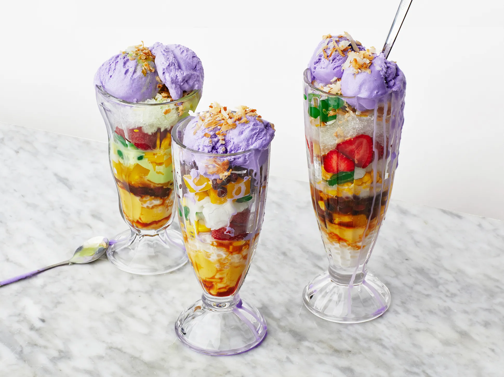

Halo-halo, the ultimate Filipino summer delight, guarantees a delectable cooling experience. It involves layers of shaved ice intertwined with an array of sweet beans, fruits, and delectable treats, all drizzled with milk. And not to be overlooked are the crowning touches: leche flan, ube halaya, or even ube ice cream!
Ingredients
- crushed or shaved ice
- milk (fresh or evaporated)
- sugar (if needed)
- sweetened saba or plantain bananas
- sweetened sweet potatoes
- fresh or sweetened jack fruit (langka)
- sweetened garbanzos or beans
- coconut strips or macapuno
- sweetened red munggo
- nata de coco (coconut gel)
- sago or tapioca pearls or jelly cut into cubes
- pinipig
- leche flan for topping
- ube jam or ube ice cream for topping
Instructions
- Prepare an ice crusher or shaver.
- Add a teaspoon each of your selected Ingredients in a tall glass.
- Add sugar if you want.
- Fill the glass with shaved ice up to the brim.
- Add some milk generously.
- Add the toppings you prefer.
- Serve with a longer spoon for mixing. Enjoy!